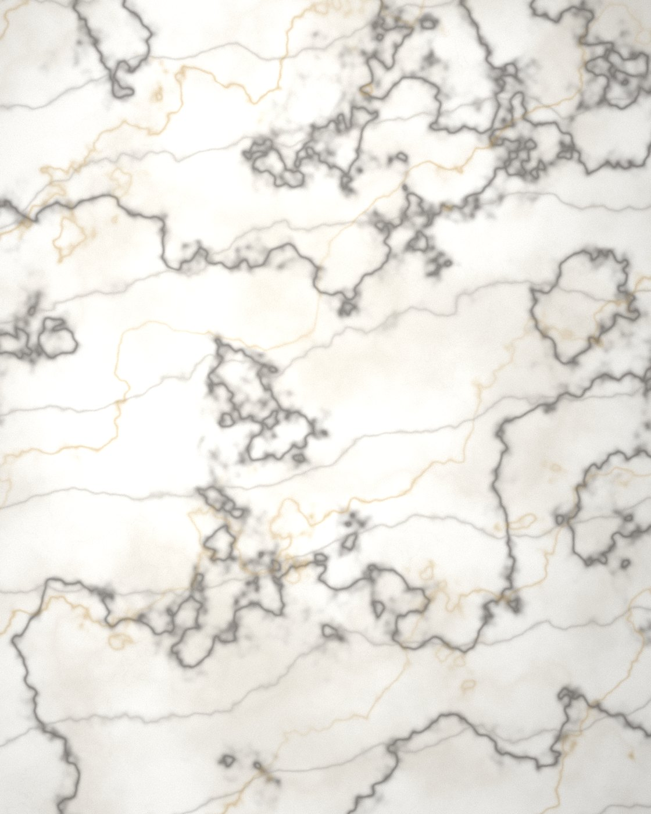
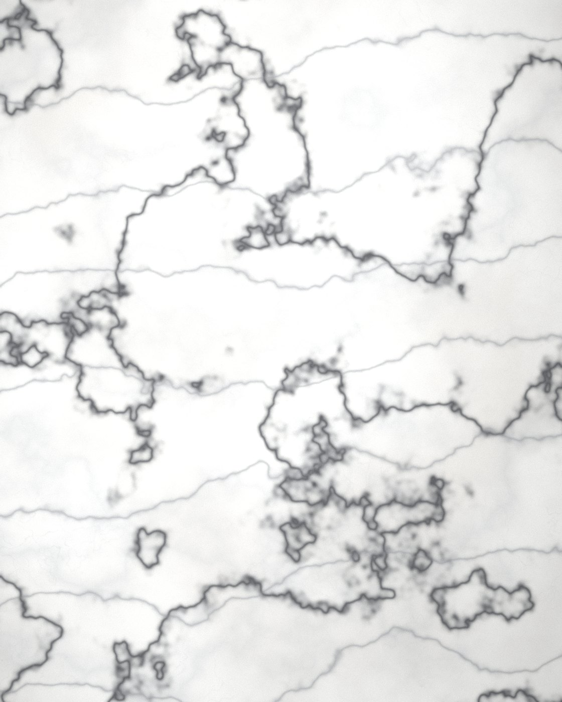
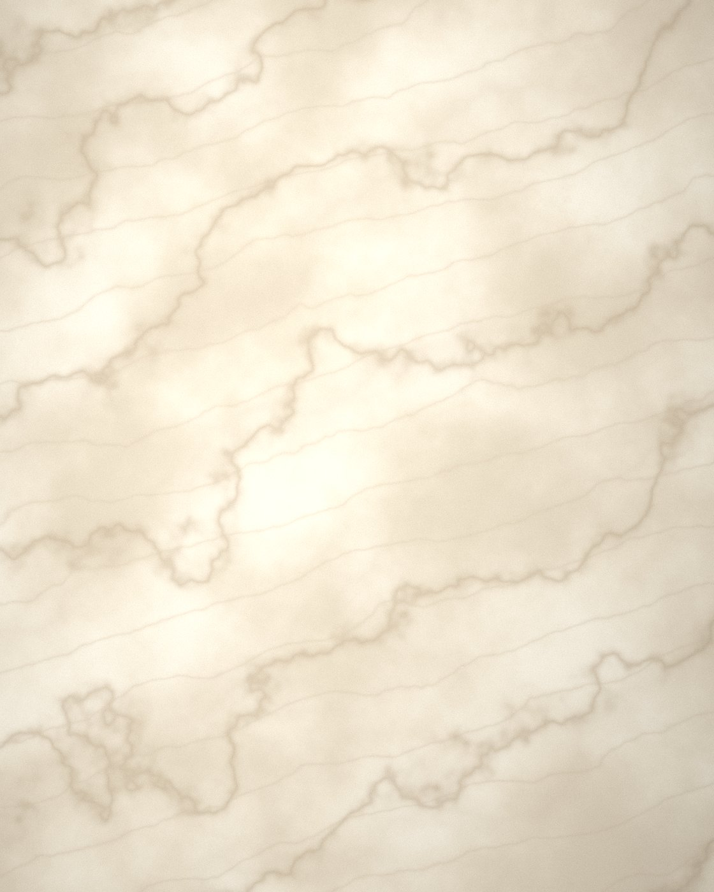
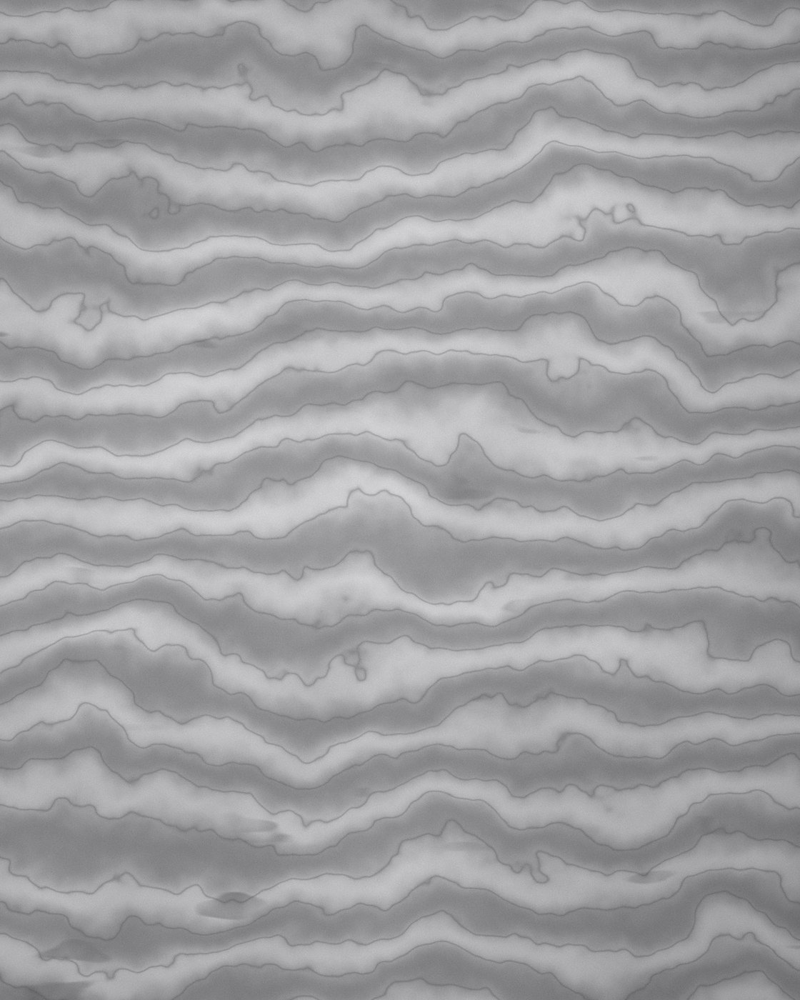
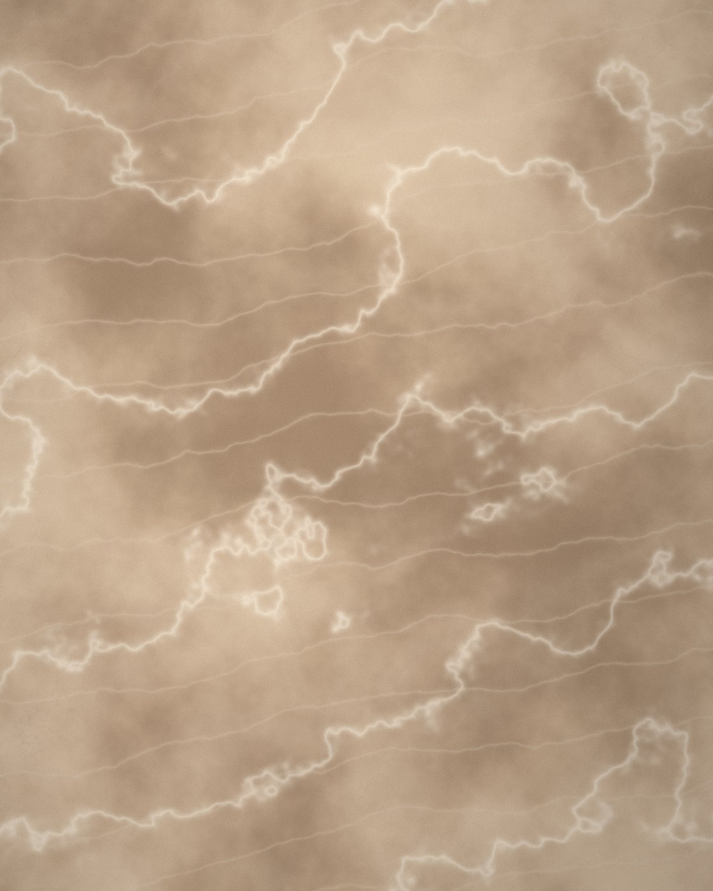
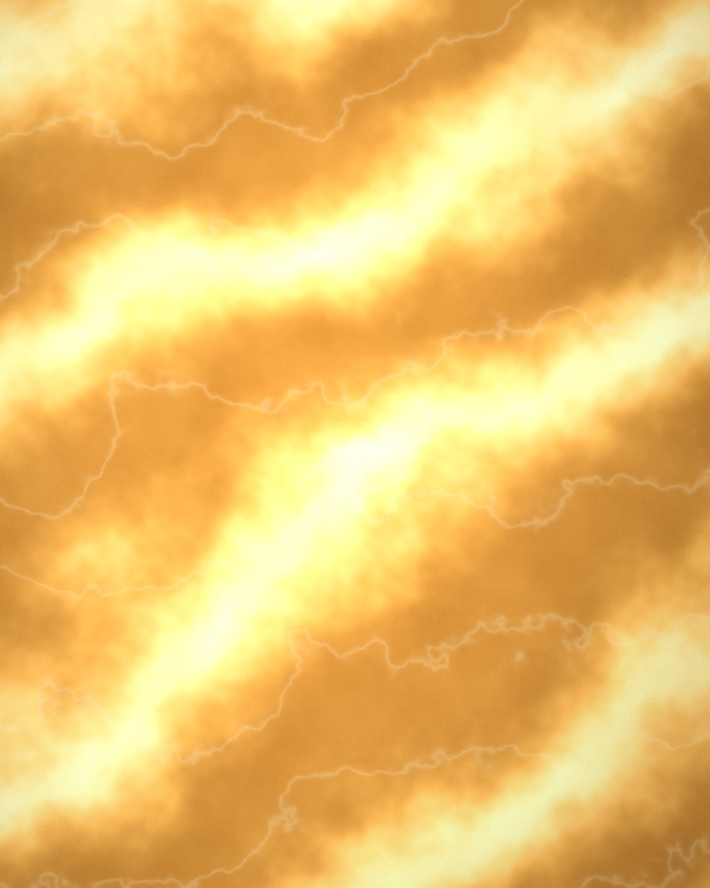

Taşın yaşadığı yerler
Mutfaktan cepheye, ışıklı panellerden merdivene: her uygulamanın kendi teknik gereklilikleri vardır.

Mutfak Tezgâhı
Ada tezgâhı ve arka panelde kesintisiz damar akışı için kitap açılımı uygulanır. Yoğun kullanım gören yüzeylerde 20 mm ve üzeri kalınlık, leke tutmaya karşı emprenye uygulaması önerilir.

Banyo & Islak Hacim
Duvardan zemine tek taşla kurulan bütünlük, banyoyu spa atmosferine taşır. Zeminde honlu yüzey kaymayı azaltır; duvarda cilalı yüzey ışığı çoğaltır.

Zemin Kaplama
Geniş zeminlerde renk birliği için plakaların aynı bloktan seçilmesi esastır. Derz aralığı 2 mm'nin altında tutularak kesintisiz bir yüzey algısı elde edilir.

Dış Cephe Kaplama
Havalandırmalı cephe sistemlerinde mekanik ankraj ile uygulanır. Dona dayanım ve su emme değerleri, iklime göre taş seçimini belirler.

Merdiven & Basamak
Basamak burunlarında kaymaz kanal açılır. Rıht ve basamak aynı bloktan seçilerek renk bütünlüğü korunur.

Arkadan Aydınlatmalı Panel
Yarı saydam oniks plakalar, arkalarına yerleştirilen homojen LED panellerle ışık kaynağına dönüşür. Plaka kalınlığı ışık geçirgenliğini doğrudan belirler.
Uygulamanıza uygun taşı seçelim
Projenizin kullanım alanını ve metrajını iletin; teknik olarak uygun taş seçeneklerini birlikte değerlendirelim.